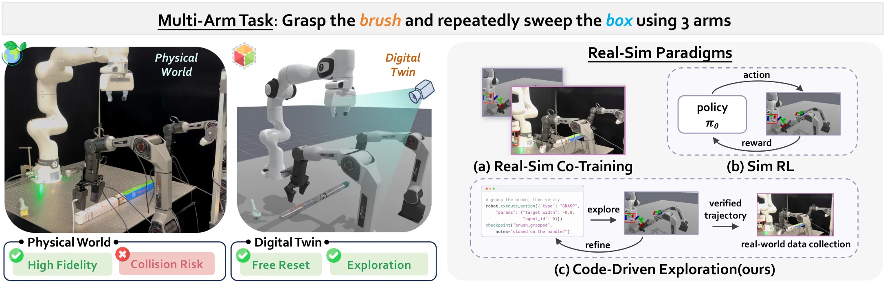
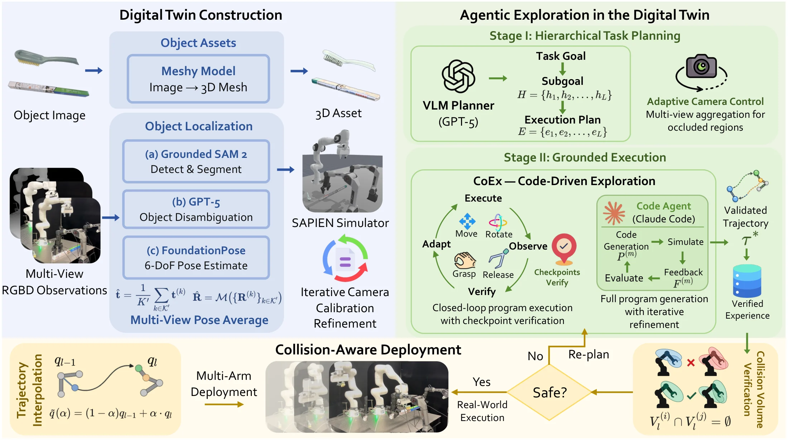
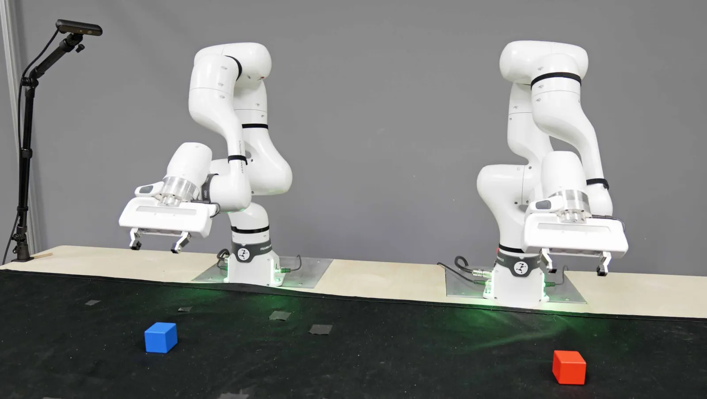
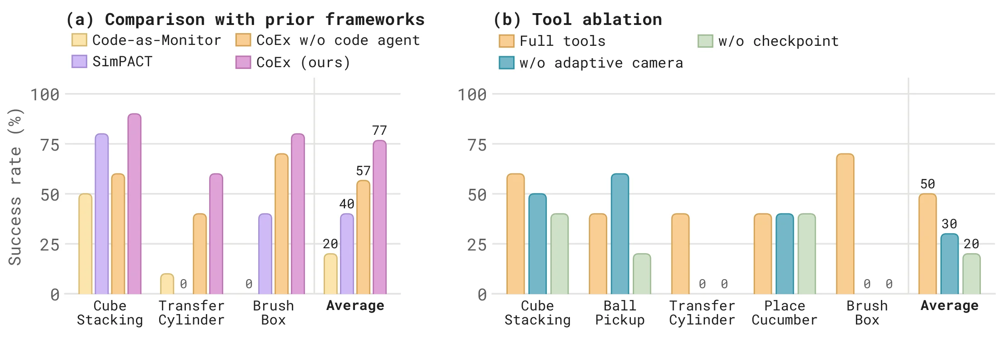
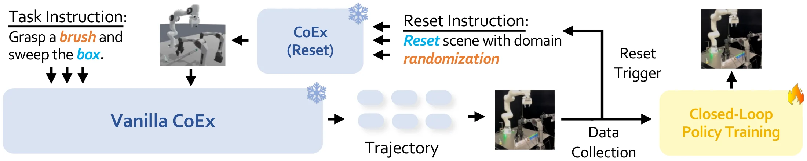

Research
CoEnv: Code-Driven Exploration in Real-to-Sim Digital Twins for Multi-Arm Manipulation
1Shanghai Jiao Tong University 2Shanghai AI Laboratory 3Harbin Institute of Technology 4University of Science and Technology of China 5CUHK-Shenzhen 6Fudan University 7Dalian University of Technology 8Carnegie Mellon University 9University of Oxford
*Equal contribution †Corresponding authors
We rebuild a real multi-arm workcell as a physics simulation and let a coding agent write, run, and debug complete robot programs inside it. A program that passes verification in the twin is executed on the real robots, and every successful run is a real demonstration that can be used to train a visuomotor policy.
Collecting demonstrations for multi-arm manipulation is slow. A single teleoperated episode can need several operators working in sync. Simulation is the usual remedy: multiply a few human demonstrations into a large simulated dataset, co-train on simulated and real data, or learn inside a reconstructed scene. In each case the simulator produces the training data, so the policy still has to cross a sim-to-real gap, and the behavior still starts from a human demonstration or a hand-written reward.
Coding agents can now write, debug, and refine entire robot programs. What they lack is a place to practice. On real hardware every retry needs a manual reset and risks collisions between arms that share the workspace. Generic simulation benchmarks are safe, but their geometry, assets, and camera views do not match the workcell where the robot actually has to work, so programs debugged there do not transfer.
CoEnv gives the agent an executable digital twin of its own deployment workspace. The agent uses the twin to find a program, not to generate training images. Once a program is verified, it runs on the real robot, and the data recorded there is real.

Building the digital twin
From two or three calibrated RGBD cameras, CoEnv rebuilds the workcell in ManiSkill on top of SAPIEN. Object meshes are generated from a few reference images and paired with convex collision proxies. Grounded SAM 2 segments the objects, GPT-5.6 Sol tells visually similar instances apart, and FoundationPose estimates a 6-DoF pose in each view; the poses are then averaged across views. Camera extrinsics are refined by rendering the twin and comparing it with the real capture until the reprojection error stops improving.
The twin does not need to be photorealistic. It needs to be resettable, queryable, and metrically aligned with the real cell, because the agent debugs against ground-truth state, and the images used for training always come from the real cameras.

Exploring at the program level
A VLM planner first splits the task into sub-goals and assigns each step to an arm. Claude Code then writes one program that drives all arms, runs it in the twin, reads the logs and checkpoint snapshots, and rewrites the program, for up to 10 rounds. Each round starts from a free reset, so the agent can afford real trial and error.
# privileged state of the twin
robot.get_robot_state(robot_id) -> {position, orientation, euler_rpy, gripper}
robot.get_object_state(name) -> {position, orientation}
# primitives via robot.execute_action(a); agent_id: int or list (synchronized arms)
a = {"type": "MOVE", "params": {delta_x, delta_y, delta_z, agent_id}}
a = {"type": "ROTATE", "params": {delta_yaw, delta_pitch, delta_roll, agent_id}}
a = {"type": "GRASP", "params": {target_width, agent_id}}
a = {"type": "RELEASE", "params": {agent_id}}
# grounded verification: snapshot state + multi-view renderings at a critical step
checkpoint(name, checkpoint_type, notes, suggested_views)Three tools in the twin keep this loop grounded:
- A verifier checks the outcome of every step against privileged simulator state.
- Checkpoints pause before risky steps, such as aligning a gripper before a grasp, and save the state and several rendered views for the agent to inspect.
- Adaptive camera control renders extra viewpoints when the arms block each other's view of the contact region.
Working with whole programs changes what each round of reasoning leaves behind. An agent that picks one primitive at a time pays one model call per step, and its reasoning is gone when the episode ends. A program can be re-run from a new initial configuration with no further model calls, retrieved as an example when a related task comes up, and read by a person before it reaches the hardware.
Deploying on the real robots
A verified trajectory is densified by interpolating between the joint configurations recorded in the twin. Before each interpolated action runs, a forward-kinematics pass computes the swept volume of every arm, and the action is executed only if no two volumes intersect. Otherwise the system re-plans from the current state. No arm-arm collision occurred in the 100 trajectories we deployed.
Results on five real tasks
We test on five tasks in two workcells. Cube Stacking, Ball Pickup, and Transfer Cylinder use two Franka Research 3 arms. Place Cucumber and Brush Box add an AgileX Piper dual-arm next to a Franka. Object poses change from trial to trial, and each method gets 10 real trials per task. Our baseline keeps the same twin, primitives, and tools but removes the code agent, so a VLM chooses every primitive step by step.

Cube Stacking
| CoEx (ours) | Without code agent | |||||||
|---|---|---|---|---|---|---|---|---|
| Task | S1 | S2 | S3 | SR | S1 | S2 | S3 | SR |
| Two arms (Franka × 2) | ||||||||
| Cube Stacking | 10/10 | 9/10 | – | 9/10 | 7/10 | 6/10 | – | 6/10 |
| Ball Pickup | 6/10 | 6/10 | – | 6/10 | 9/10 | 4/10 | – | 4/10 |
| Transfer Cylinder | 8/10 | 6/10 | 6/10 | 6/10 | 9/10 | 4/10 | 4/10 | 4/10 |
| Three arms (Franka + AgileX Piper × 2) | ||||||||
| Place Cucumber | 8/10 | 8/10 | 6/10 | 6/10 | 9/10 | 7/10 | 4/10 | 4/10 |
| Brush Box | 8/10 | 8/10 | 8/10 | 8/10 | 10/10 | 9/10 | 7/10 | 7/10 |
| Average | 80% | 74% | 67% | 70% | 88% | 60% | 50% | 50% |
CoEx reaches 70% average success, against 50% without the code agent, and is ahead on all five tasks. With 10 trials per cell, the per-task gaps are best read as trends. The more useful pattern is where each system loses trials. The step-wise baseline clears the first milestone more often (88% vs. 80%) but loses trials at every later stage: it completes 25 of the 44 trials that pass the first milestone. CoEx completes 35 of 40. Ten of its 15 failures happen before the first milestone, and on Ball Pickup all four failures occur at the initial bimanual contact. A program verified end to end tends to either fail at the first grasp or finish the task, while step-by-step decisions let small errors add up over the horizon.
On three representative tasks we also compare with two earlier VLM-planning frameworks. CoEx averages 77%, against 57% without the code agent, 40% for SimPACT, and 20% for Code-as-Monitor. The gap is largest on the Transfer Cylinder handover, where the two earlier frameworks succeed 1 and 0 times out of 10 and CoEx succeeds 6 times. Code-as-Monitor detects a failure only after it has happened on the hardware, and SimPACT commits to the first plan its simulator accepts. CoEx runs into the same failures inside the twin, where retrying costs nothing.
Both twin-side tools matter. Removing adaptive camera control from the baseline drops its average success from 50% to 30%, mostly on tasks where the arms occlude the contact region. Removing checkpoints drops it to 20%, because early errors are no longer caught before they compound.

Reusing verified rollouts
A verified program can be re-run from new initial configurations without further reasoning. In one agent session, CoEx yields 17.5 verified episodes on Cube Stacking and 9.5 on Brush Box, 11.7× and 3.8× the step-wise baseline.
To check whether these rollouts are useful as training data, we record them on the real robot and fine-tune a π0.5 policy. With 200 rollouts the policy succeeds 10/10 times on Cube Stacking and 7/10 on Brush Box, compared with 4/10 and 2/10 from 20 teleoperated demonstrations. Pairing those demonstrations with 200 rollouts of the same program recorded in the twin instead gives 3/10 and 0/10. The program transfers because it is written in terms of object poses. The rendered images do not, since they differ from the real cameras in texture, lighting, and sensor noise.
| Episodes / session | π0.5 success by training data | |||||
|---|---|---|---|---|---|---|
| Task | w/o code agent | CoEx | 20 teleop. | 200 in twin + 20 teleop. | 50 CoEx | 200 CoEx |
| Cube Stacking | 1.5 | 17.5 | 4/10 | 3/10 | 8/10 | 10/10 |
| Brush Box | 2.5 | 9.5 | 2/10 | 0/10 | 4/10 | 7/10 |

Limitations
The twin covers rigid objects with pre-generated assets, fixed robot bases, and static scenes, and a single centralized planner controls all arms, so we make no claim about decentralized autonomy or about more than three arms. Real execution replays the trajectory open loop, which leaves residual pose offsets at grasp or placement as a main source of failure (see the failure cases in Figure 3). The evaluation uses 10 trials per task, and CoEx and its ablation differ in backbone model (Claude Code and GPT-5.6 Sol) as well as in loop structure.
Citation
@article{kang2026coenv,
title = {CoEnv: Code-Driven Exploration in Real-to-Sim Digital Twins
for Multi-Arm Manipulation},
author = {Kang, Li and Fan, Yutao and Li, Rui and Zhou, Heng and
Qin, Yiran and Zhang, Zhemeng and Huang, Songtao and
Song, Xiufeng and Zhang, Zaibin and Chen, Bruno N.Y. and
Yin, Zhenfei and Zhou, Dongzhan and Zuo, Wangmeng and Bai, Lei},
journal = {arXiv preprint arXiv:2604.05484},
year = {2026}
}